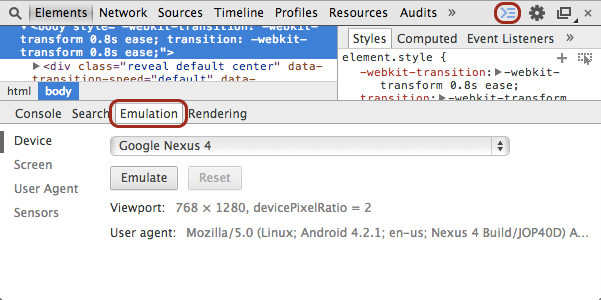
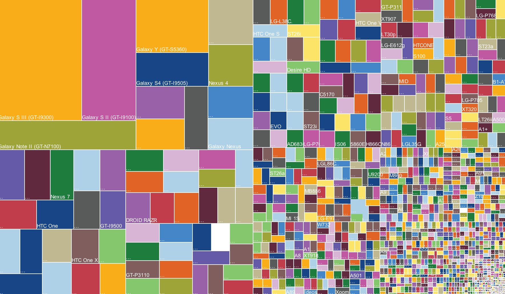

Set up your computer for today
Wifi Network: Coalmarch Guest Network
Wifi Password: seolikeaboss
What you need
- A modern browser (e.g. Chrome, Firefox)
- A text editor (e.g. Sublime Text)
- A copy of the workshop files
- Follow along here: http://amwelles.github.io/gdi-rdu-responsive-workshop

Responsive Design Workshop
Girl Develop It! RDU
Created by Autumn Welles / @amwelles
Welcome!
Girl Develop It is here to provide affordable and accessible programs to learn software through mentorship and hands-on instruction.
Some guidelines
- We are here for you!
- Every question is important
- Help each other
- Have fun
Who is Autumn, really?
- Started learning HTML & CSS for internet games in middle school.
- Moved across the country and (by some miracle) obtained a job at 19.
- Currently works at Coalmarch as a front-end developer.
What do you want out of this workshop?
What is responsive design?
The theory and practice of crafting websites that allow the user to enjoy its features no matter what device they are using.
Responsive ingredients
- media queries
- flexible images
- fluid grids
Media queries
If you've ever created a print stylesheet for a website (media="print") then you're already familiar with the idea of creating a specific stylesheet to come into play under certain conditions.
Media queries
We write our mobile styles first, so that smaller devices don't have to worry about loading a bunch of extra styling.
.sidebar {
width: 100%;
text-align: center;
}Then we work our way up to larger screen sizes.
@media screen and (min-width: 768px) {
.sidebar {
width: 30%;
text-align: left;
float: right;
}
}CSS for certain situations
Rather than looking for a type of device they look at the capability of the device, and you can use them to check for all kinds of things.
- width and height of the viewport
- device width and height
- orientation (landscape or portrait)
- resolution
Examples of responsive websites
But I don't have an iPad/Samsung/iPhone/Kindle
Just resize the browser for the most important media queries. Chrome has an emulator built in! Open up the Developer Tools, show the drawer, and select the "Emulation" tab.

* You'll need to reload the page after you press the "Emulate" button.
Responsive design is disruptive
Before you can embrace Responsive, you have to update your processes. It also means educating clients and (for some) resetting their expectation that websites should look the same in every browser, on every device.
In support of responsive
With disruption comes new tools and new ways of thinking.
Wireframing
Lots of wireframing software such as Balsamiq now offer a plethora of responsive-capable tools.
Designing
New ways of presenting designs are also popping up,
such as style tiles. The style tile to the left was
turned into the website on the right.

One web, for the love of humanity!
This is the idea that there shouldn't be a mobile web and a tablet web and desktop web. We should assume that people will try to view a website on whatever device they have with them.
Our users love their devices, and it's not their fault they've been given 1 billion to choose from!

These are just Android devices. Here's a running list of all devices.
Seamless web
Browsers like Chrome and Safari know that people want seamless web browsing experiences. Browse or bookmark something on your mobile phone, get home and view it on your desktop browser.
By making your website responsive, you'll ensure that it looks good no matter where your users are.
Media query support
The current versions of all major browsers support media queries. There will always be someone who is, for whatever reason, using an older browser.
No support
- Internet Explorer 8 and below
- Safari 3.2 and below
Still need support for older browsers?
There's a Javascript library for that!
Mobile first?
Google it and it probably has
Luke Wroblewski's name attached to it.
What it means is, instead of offering "lighter" content or a seemingly restrictive experience to those viewing your site on a mobile device, stop. Regroup. Plan your site out thoughtfully enough that your content is already concise and simplified to begin with. Thinking "Mobile First" helps you accomplish this while you transition to Responsive Design.
Just a fad?
Responsive is not a fad, as it addresses a real
need for planning our sites thoughtfully.
A replacement for mobile apps?
Responsive is not a replacement for mobile apps. Responsive can save companies time and money by allowing for the development and maintenance of one set of code, but only if it's the appropriate solution.
Questions?
Lunch time!
Grab a slice of pizza!
Let's get coding!
Make your life easier
- Frameworks
- Preprocessors
Why use a framework?
- Many responsive features already built out
- Menus
- Images
- Grid system
- Tested by others
- Kickstart your project
Why use a preprocessor?
- DRY (Don't Repeat Yourself) philosophy
- Variables
- Helpful snippets for cross-browser compatibility
Making an existing site responsive
Breakpoints
Everytime the design starts to break,
it's time for a new media query.